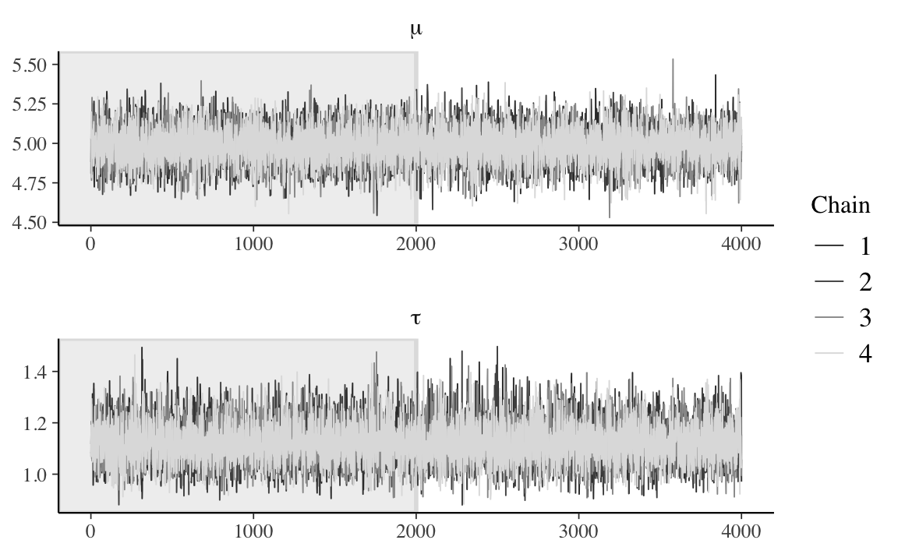
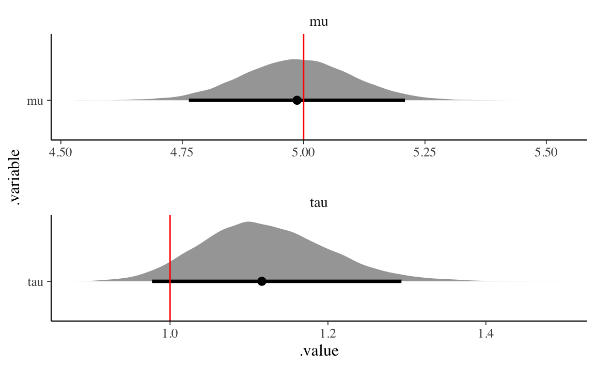

Capitolo 32 Modello gerarchico: simulazioni
In questo Capitolo esamineremo nuovamente il modello gerarchico. Per chiarirne meglio il funzionamento useremo delle simulazioni. La discussione che segue è stata adattata dal seguente blog.
32.1 Modello generativo dei dati
I modelli bayesiani sono “generativi”, ovvero rappresentano il processo generativo dei dati e, dunque, essi stessi possono essere usati per generare campioni di dati. Per introdurre questo aspetto, consideriamo il modello più semplice, ovvero il modello Normale descritto in precedenza. Le osservazioni per tale modello corrispondono alle osservazioni di N individui contenuti nel vettore y. Il modello assume che y segua la legge Normale di media mu e deviazione standard sigma.
model_string <- "
data {
int<lower=1> N;
vector[N] y;
}
parameters {
real mu;
real<lower=0> tau;
}
model {
mu ~ normal(0, 5);
tau ~ normal(0, 5);
y ~ normal(mu, tau);
}
"Compiliamo il modello.
writeLines(model_string, con = "code/flat_regression.stan")
file1 <- file.path("code", "flat_regression.stan")
mod1 <- cmdstan_model(file1)Fissati i parametri, il modello precedente può essere usato per generare campioni di dati. A questo fine dobbiamo specificare solo i blocchi data e generated quantities, come indicato qui sotto. La funzione normal_rng(mu, tau) è il corrispondente in linguaggio Stan della funzione rnorm() in \(\mathsf{R}\).
model2_string <- "
data {
int<lower=1> N;
real mu;
real<lower=0> tau;
}
generated quantities {
vector[N] y;
for (n in 1 : N) {
y[n] = normal_rng(mu, tau);
}
}
"Compiliamo il modello.
writeLines(model2_string, con = "code/generate_flat_data.stan")
file2 <- file.path("code", "generate_flat_data.stan")
mod2 <- cmdstan_model(file2)Specifichiamo ora i valori dei parametri indicati qui sotto.
# Specify data and parameter values.
sim_values <- list(
N = 100, # Number of observations.
mu = 5, # Mean of the regression.
tau = 1 # Variance of the regression.
)Utilizziamo cmdstan per generare 1,000 campioni di 100 osservazioni ciascuno.
sim_data <- mod2$sample(
data = sim_values,
chains = 1,
seed = 42,
fixed_param = TRUE
)
#> Running MCMC with 1 chain...
#>
#> Chain 1 Iteration: 1 / 1000 [ 0%] (Sampling)
#> Chain 1 Iteration: 100 / 1000 [ 10%] (Sampling)
#> Chain 1 Iteration: 200 / 1000 [ 20%] (Sampling)
#> Chain 1 Iteration: 300 / 1000 [ 30%] (Sampling)
#> Chain 1 Iteration: 400 / 1000 [ 40%] (Sampling)
#> Chain 1 Iteration: 500 / 1000 [ 50%] (Sampling)
#> Chain 1 Iteration: 600 / 1000 [ 60%] (Sampling)
#> Chain 1 Iteration: 700 / 1000 [ 70%] (Sampling)
#> Chain 1 Iteration: 800 / 1000 [ 80%] (Sampling)
#> Chain 1 Iteration: 900 / 1000 [ 90%] (Sampling)
#> Chain 1 Iteration: 1000 / 1000 [100%] (Sampling)
#> Chain 1 finished in 0.0 seconds.Recuperiamo i 1,000 campioni di 100 osservazioni generati dal modello.
sim_data_stanfit <- rstan::read_stan_csv(sim_data$output_files())
fake_data_matrix <- sim_data_stanfit %>%
as.data.frame %>%
dplyr::select(contains("y"))
dim(fake_data_matrix)
#> [1] 1000 100Recuperiamo i dati di un singolo campione.
sim_y <- fake_data_matrix[1, ]
as.numeric(sim_y)
#> [1] 4.92727 6.07489 5.62040 5.64771 6.18387 5.49394 4.54341 5.73332 4.88385
#> [10] 3.80247 5.53683 3.79003 6.13880 5.10517 4.51741 3.23568 5.47868 5.14018
#> [19] 5.93248 3.68679 2.64747 3.96661 6.66431 4.25740 3.80611 5.00020 2.10804
#> [28] 3.30112 3.12263 6.68139 4.79380 3.79871 6.56535 4.59639 3.22918 5.69388
#> [37] 4.43925 5.20007 5.62791 6.45734 4.99799 5.62754 4.20319 5.11804 4.41627
#> [46] 3.76769 4.37040 5.87306 6.33207 6.40474 3.55891 5.80308 5.34626 5.84671
#> [55] 3.02968 5.36073 4.66595 4.98986 7.56634 5.09770 5.08534 5.42343 3.78727
#> [64] 3.09178 4.05891 5.65567 4.68312 6.45040 5.30334 7.06159 4.11758 5.38201
#> [73] 5.30722 4.82675 7.39546 5.18963 2.42694 4.73127 5.86768 4.49791 5.27013
#> [82] 3.04167 6.70704 5.44426 4.05945 3.88011 5.88271 5.56971 4.92103 5.62393
#> [91] 5.66139 4.77127 3.75681 4.98407 5.41049 6.23022 5.73609 6.35978 4.95185
#> [100] 4.43508Possiamo ora usare il modello flat_regression.stan per stimare i parametri che abbiamo utilizzato per generare i dati. Sistemiamo i 100 valori simulati in una lista.
# Specify data.
data <- list(
N = length(sim_y), # Number of observations.
y = as.numeric(sim_y) # Vector of observations.
)Otteniamo i campioni dalla distribuzione a posteriori dei parametri del modello.
fit <- mod1$sample(
data = data,
iter_sampling = 4000L,
iter_warmup = 2000L,
chains = 4L,
refresh = 0
)
#> Running MCMC with 4 sequential chains...
#>
#> Chain 1 finished in 0.1 seconds.
#> Chain 2 finished in 0.1 seconds.
#> Chain 3 finished in 0.1 seconds.
#> Chain 4 finished in 0.1 seconds.
#>
#> All 4 chains finished successfully.
#> Mean chain execution time: 0.1 seconds.
#> Total execution time: 0.6 seconds.Esaminiamo le medie a posteriori dei parametri \(\mu\) e \(\tau\).
fit$summary()
#> # A tibble: 3 × 10
#> variable mean median sd mad q5 q95 rhat ess_bulk ess_tail
#> <chr> <dbl> <dbl> <dbl> <dbl> <dbl> <dbl> <dbl> <dbl> <dbl>
#> 1 lp__ -61.1 -60.8 1.02 0.728 -63.2 -60.2 1.00 7655. 8226.
#> 2 mu 4.99 4.99 0.114 0.113 4.80 5.17 1.00 12532. 10226.
#> 3 tau 1.12 1.12 0.0807 0.0795 0.998 1.26 1.00 11652. 10121.Le medie a posteriori sono molto simili al vero valore dei parametri.
Esaminiamo la convergenza delle catene di Markov.
fit_stanfit <- rstan::read_stan_csv(fit$output_files())
fit_stanfit %>%
mcmc_trace(
pars = c("mu", "tau"),
n_warmup = 2000,
facet_args = list(nrow = 2, labeller = label_parsed)
)
Esaminiamo graficamente la distribuzioni a posteriori dei parametri.
par_values <- tibble(
.variable = c("mu", "tau"),
values = c(sim_values$mu, sim_values$tau),
)
par_values
#> # A tibble: 2 × 2
#> .variable values
#> <chr> <dbl>
#> 1 mu 5
#> 2 tau 1fit_stanfit %>%
gather_draws(mu, tau) %>%
ggplot(aes(x = .value, y = .variable)) +
geom_halfeyeh(.width = .95) +
geom_vline(aes(xintercept = values), par_values, color = "red") +
facet_wrap(
~ .variable,
nrow = 2,
scales = "free"
)
Possiamo concludere che gli intervalli di credibilità a posteriori del 95% contengono i veri valori dei parametri (in rosso) che sono stati utilizzati per simulare i dati. In questo modello non gerarchico, dunque, il processo di inferenza bayesiana ottiene il risultato desiderato.
32.2 Modello gerarchico
Supponiamo ora che i dati abbiano una struttura complessa, ovvero siano organizzati in cluster (ad esempio, bambini in scuole diverse). In linguaggio Stan il modello gerarchico può essere scritto nel modo seguente.
model3_string <- "
// Index values and observations.
data {
int<lower=1> N; // Number of observations.
int<lower=1> K; // Number of groups.
vector[N] y; // Vector of observations.
array[N] int<lower=1, upper=K> g; // Vector of group assignments.
}
// Parameters and hyperparameters.
parameters {
real mu; // Mean of the population model.
real<lower=0> tau; // Variance of the population model.
vector[K] beta; // Vector of group intercepts.
real<lower=0> sigma; // Variance of the likelihood.
}
// Hierarchical regression.
model {
// Hyperpriors.
mu ~ normal(0, 5);
tau ~ normal(0, 5);
// Prior.
sigma ~ normal(0, 5);
// Population model and likelihood.
beta ~ normal(mu, tau);
for (n in 1 : N) {
y[n] ~ normal(beta[g[n]], sigma);
}
}
"Nel blocco data ora abbiamo un vettore g che indica a quale dei K gruppi appartiene ciascuno degli N individui nel campione. Nel blocco parameters, abbiamo un vettore K-dimensionale di parametri beta che specifica una media separata per ciascuno dei K gruppi di osservazioni. Nel blocco model possiamo vedere che la verosimiglianza delle osservazioni (ora all’interno di un ciclo for) è ancora assunta essere normale, ma ora il punteggio di ogni individuo ha una media diversa e pari a beta che è specifica per il gruppo a cui l’individuo appartiene. Lo statement beta ~ normal(mu, tau) ci dice che i coefficienti beta specifici al gruppo sono tratti da una popolazione che si presume normale con una media mu e deviazione standard tau.
Il modello specifica dunque una struttura gerarchica: ci sono due livelli nel nostro modello, il modello a livello inferiore specifica la verosimiglianza delle osservazioni, mentre il modello al livello superiore specifica le proprietà della popolazione. Infine, il modello include le distribuzioni a priori sui parametri della popolazione (formalmente indicati come hyper-priors, poiché sono le distribuzioni a priori delle distribuzioni a priori). Per gli iper-parametri mu e tau vengono ipotizzate distribuzioni a priori Normali. Infine, alla deviazione standard della verosimiglianza, ora chiamata sigma, viene imposta una distribuzione a priori Normale.
Come in precedenza, dallo script precedente possiamo derivare un nuovo script che contiene il modello generativo dei dati.
model4_string <- "
// Index and hyperparameter values.
data {
int<lower=1> N; // Number of observations.
int<lower=1> K; // Number of groups.
array[N] int<lower=1, upper=K> g; // Vector of group assignments.
real mu; // Mean of the population model.
real<lower=0> tau; // Variance of the population model.
real<lower=0> sigma; // Variance of the likelihood.
}
// Generate data according to the hierarchical regression.
generated quantities {
vector[N] y; // Vector of observations.
vector[K] beta; // Vector of group intercepts.
// Draw parameter values and generate data.
for (k in 1 : K) {
beta[k] = normal_rng(mu, tau);
}
for (n in 1 : N) {
y[n] = normal_rng(beta[g[n]], sigma);
}
}
"Specifichiamo i valori degli iper-parametri.
sim4_values <- list(
N = 100, # Number of observations.
K = 5, # Number of groups.
g = sample(5, 100, replace = TRUE), # Vector of group assignments.
mu = 5, # Mean of the population model.
tau = 1, # Variance of the population model.
sigma = 1 # Variance of the likelihood.
)Compiliamo il modello.
writeLines(model4_string, con = "code/generate_hierarchical_data_01.stan")
file4 <- file.path("code", "generate_hierarchical_data_01.stan")
mod4 <- cmdstan_model(file4)Utilizziamo cmdstan per generare 1,000 campioni di 100 osservazioni ciascuno.
sim4_data <- mod4$sample(
data = sim4_values,
chains = 1,
fixed_param = TRUE
)
#> Running MCMC with 1 chain...
#>
#> Chain 1 Iteration: 1 / 1000 [ 0%] (Sampling)
#> Chain 1 Iteration: 100 / 1000 [ 10%] (Sampling)
#> Chain 1 Iteration: 200 / 1000 [ 20%] (Sampling)
#> Chain 1 Iteration: 300 / 1000 [ 30%] (Sampling)
#> Chain 1 Iteration: 400 / 1000 [ 40%] (Sampling)
#> Chain 1 Iteration: 500 / 1000 [ 50%] (Sampling)
#> Chain 1 Iteration: 600 / 1000 [ 60%] (Sampling)
#> Chain 1 Iteration: 700 / 1000 [ 70%] (Sampling)
#> Chain 1 Iteration: 800 / 1000 [ 80%] (Sampling)
#> Chain 1 Iteration: 900 / 1000 [ 90%] (Sampling)
#> Chain 1 Iteration: 1000 / 1000 [100%] (Sampling)
#> Chain 1 finished in 0.0 seconds.Recuperiamo i 1,000 campioni di 100 osservazioni generati dal modello.
sim4_data_stanfit <- rstan::read_stan_csv(sim4_data$output_files())
fake_data4_matrix <- sim4_data_stanfit %>%
as.data.frame %>%
dplyr::select(contains("y"))
dim(fake_data4_matrix)
#> [1] 1000 100Selezioniamo i dati di un singolo campione.
sim4_y <- fake_data4_matrix[1, ]
dim(sim4_y)
#> [1] 1 100Seleziono i valori beta.
fake_beta_matrix <- sim4_data_stanfit %>%
as.data.frame %>%
dplyr::select(contains("beta"))Isolo i valori beta del primo campione di dati simulati.
sim4_beta <- fake_beta_matrix[1, ]Possiamo ora testare il nostro modello gerarchico utilizzando i dati simulati.
data3 <- list(
N = length(sim4_y), # Number of observations.
K = sim4_values$K, # Number of groups.
y = as.numeric(sim4_y), # Vector of observations.
g = sim4_values$g # Vector of group assignments.
)Otteniamo i campioni dalla distribuzione a posteriori dei parametri del modello.
writeLines(model3_string, con = "code/hierarchical_regression_01.stan")
file3 <- file.path("code", "hierarchical_regression_01.stan")
mod3 <- cmdstan_model(file3)
fit3 <- mod3$sample(
data = data3,
iter_sampling = 4000L,
iter_warmup = 2000L,
chains = 4L,
refresh = 0
)
#> Running MCMC with 4 sequential chains...
#>
#> Chain 1 finished in 0.3 seconds.
#> Chain 2 finished in 0.2 seconds.
#> Chain 3 finished in 0.3 seconds.
#> Chain 4 finished in 0.2 seconds.
#>
#> All 4 chains finished successfully.
#> Mean chain execution time: 0.3 seconds.
#> Total execution time: 1.4 seconds.Esaminiamo la convergenza delle catene di Markov.
fit3_stanfit <- rstan::read_stan_csv(fit3$output_files())
fit3_stanfit %>%
mcmc_trace(
pars = c("mu", "tau", str_c("beta[", 1:data3$K, "]"), "sigma"),
n_warmup = 2000,
facet_args = list(nrow = 5, labeller = label_parsed)
)Esaminiamo graficamente la distribuzioni a posteriori dei parametri.
# Recover parameter values.
hyper_par_values <- tibble(
.variable = c("mu", "tau", "sigma"),
values = c(sim4_values$mu, sim4_values$tau, sim4_values$sigma)
)
fit3_stanfit %>%
gather_draws(mu, tau, sigma) %>%
ggplot(aes(x = .value, y = .variable)) +
geom_halfeyeh(.width = .95) +
geom_vline(aes(xintercept = values), hyper_par_values, color = "red") +
facet_wrap(
~ .variable,
nrow = 2,
scales = "free"
)Consideriamo anche gli intervalli di credibilità al 95% per i parametri beta.
broom.mixed::tidyMCMC(
fit3_stanfit,
conf.level = 0.95,
conf.int = TRUE,
conf.method = "HPDinterval",
pars = c("beta")
)
#> # A tibble: 5 × 5
#> term estimate std.error conf.low conf.high
#> <chr> <dbl> <dbl> <dbl> <dbl>
#> 1 beta[1] 4.84 0.211 4.44 5.27
#> 2 beta[2] 4.35 0.225 3.91 4.78
#> 3 beta[3] 6.22 0.259 5.72 6.73
#> 4 beta[4] 5.38 0.263 4.87 5.90
#> 5 beta[5] 3.15 0.210 2.74 3.56I valori usati nella simulazione sono i seguenti.
sim4_beta
#> beta[1] beta[2] beta[3] beta[4] beta[5]
#> 1 5.00552 4.51655 6.25045 5.08532 3.01116In conclusione, anche il modello gerarchico è in grado di recuperare accuratamente il valore dei parametri usati nella simulazione per creare i dati.
Commenti e considerazioni finali
I modelli gerarchici forniscono una soluzione che è una via di mezzo tra l’assenza di aggregazione delle informazioni (ovvero, modelli non gerarchici separati per ciascun gruppo) e la completa aggregazione delle informazioni (ovvero, modelli che uniscono tutte le osservazioni in un unico campione e non distinguono tra i gruppi). I modelli gerarchici consentono di modellare in modo appropriato le differenze tra gruppi di osservazioni. Data la prevalenza di situazioni di questo tipo in psicologia, i modelli gerarchici dovrebbero rappresentare il punto di partenza nella maggior parte delle analisi dei dati psicologici. Stan consente di svolgere in maniera semplice i calcoli necessari per fare inferenza in situazioni di questo tipo.